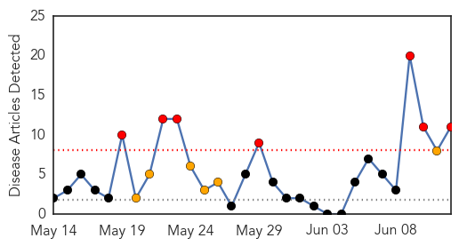
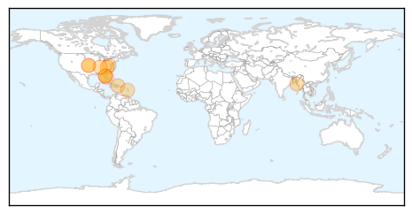
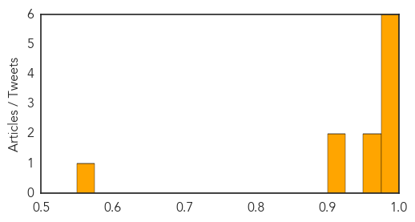
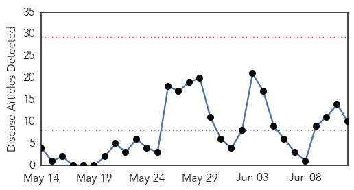
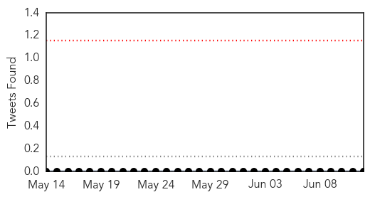

Chikungunya
30-Day Web Trend
7 alerts, 6 warnings

30-Day Twitter Trend
0 alerts, 0 warnings

Article Locations
Article Confidences
Top Articles:
- 0.999
- Untitled Article
- 0.996
- 1st Chikungunya case confirmed in US Virgin Islands
- 0.994
- Caribbean cases prompt mosquito virus warning
- 0.992
- Tennessee Might Have Its First Case of Chikungunya
- 0.992
- Chikungunya cases climb to 77,320 in the country
- 0.975
- NC Reports First Confirmed Case of Chikungunya Virus
- 0.967
- News Scan for Jun 12, 2014
- 0.952
- Health Highlights: June 12, 2014
- 0.903
- Threat of Emerging Virus can be Stopped: Interim results of First Clinical Trial of Themis Bioscience's Vaccine Candidate Against Chikungunya Fever Prove Successful
- 0.901
- Dominicans deny Chikungunya is caused by mosquitoes
- 0.564
- Mosquito control efforts key to chikungunya prevention in U.S.
Top Tweets:
-
No tweets found for Jun 12, 2014
Ebola
30-Day Web Trend
0 alerts, 0 warnings

30-Day Twitter Trend
0 alerts, 0 warnings

Article Locations

Article Confidences

Top Articles:
- 1.000
- Fear and ignorance aid spread of Ebola
- 1.000
- Sierra Leone Shuts Borders to Guinea and Liberia as Death Toll Rises
- 1.000
- Curbing Guinea’s other outbreaks
- 0.999
- Sierra Leone suspends trade fairs, closes schools to fight Ebola
- 0.999
- Sierra Leone shuts borders, closes schools to fight Ebola
- 0.999
- CORRECTED-Sierra Leone suspends trade fairs, closes schools to fight Ebola
- 0.998
- Kailahun urgently needs Food Aid & Protective Gears
- 0.992
- Njaluahun Blame Government for Rapid Spread of Ebola
- 0.962
- Govt. closes all schools « Awoko Newspaper
- 0.901
- Awareness Times News Briefs from Sierra Leone
Top Tweets:
- 0.663
- RT: Sierra Leone shuts borders, closes schools to fight Ebola http://t.co/QkRK5mgrof